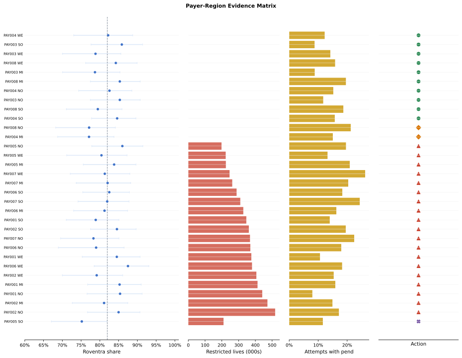
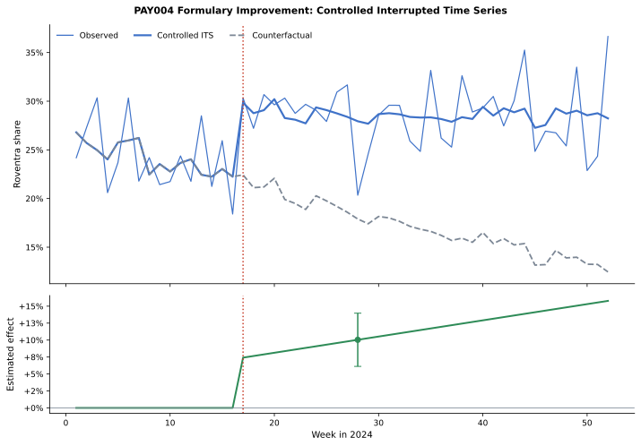
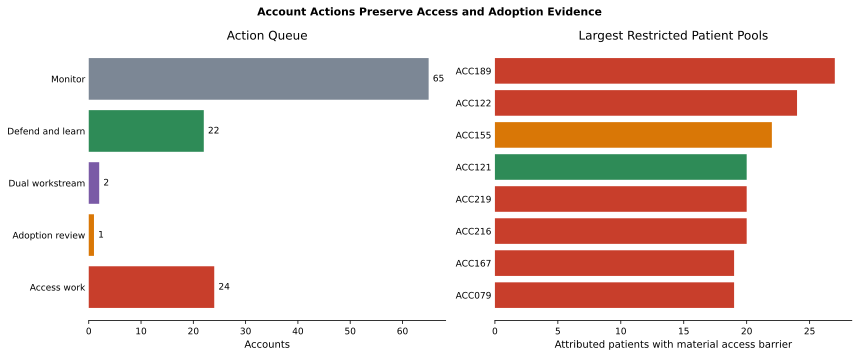
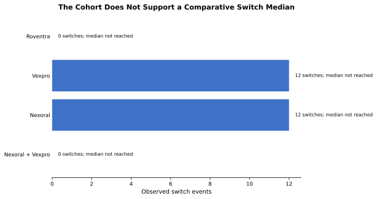

Chapter 7: Competitive Intelligence and Market Access
Roventra uptake is uneven across the country. In some payer-region cells it converts new patients well; in others it barely moves. The brand team needs to know why, because the answer decides who works the problem. If patients cannot get the drug, market access has to renegotiate coverage and utilization-management terms with the plan. If patients can get the drug but prescribers still pick a competitor first, field analytics has to investigate adoption. These are different teams, different timelines, and different budgets. Routing a coverage problem to the field, or an adoption problem to contracting, wastes a quarter and leaves the gap open.
The trap is that both problems look the same from the top: low Roventra share. Most enrolled lives in this market sit behind a real access barrier, yet a handful of payer-region cells have workable coverage and still trail the brand's national adoption. Observed share alone cannot tell those two situations apart, and small cells make the picture noisier still.
This chapter builds the evidence that separates them. You will assemble an effective-dated access landscape, count new starts with the prescription-volume measures the field actually uses, turn raw pharmacy transactions into clean prescription attempts, estimate corrected competitive share with its uncertainty, measure a real formulary change against a control, and route every payer-region and account result to the team that can act on it. By the end you can stand behind each action with the evidence, the population it rests on, the owner, and a refresh date.
All products, patients, payers, accounts, and events here are fictional and synthetic. One formulary event for PAY004 carries a planted effect so the measurement code can be checked against a known answer.
Run the blocks in order from the repository root. Generate the supplemental data first:
uv run python ch07_competitive/generation_modules/generate_ch07_data.py
Chapter 7 supplemental data
plan_region_enrollment: 32 rows
formulary_event_panel: 208 rows
Wrote Chapter 7-only data to ch07_competitive/data/generated
The analysis reuses the synthetic source records and the derived journey and HCP-account outputs already built earlier in the book, and adds two Chapter 7 tables: a plan-region enrollment count and a weekly formulary-event panel, including the
planted PAY004 effect. Then open chapter7_walkthrough.ipynb, or run the chapter through the shared analysis entry point.
7.1 Load the Evidence Package
One function loads every input and returns the full result set, so each later section reads a finished table instead of rebuilding it. The headline numbers are the anchors the rest of the chapter returns to.
Listing 7.1: Load the shared Chapter 7 results
from pathlib import Path
import sys
import pandas as pd
ROOT = Path.cwd().resolve()
sys.path.insert(0, str(ROOT))
from ch07_competitive.scripts.run_analysis import run_analysis
results = run_analysis(ROOT)
headline = results["headline"].iloc[0]
print(f"New-to-therapy patients: {int(headline.new_to_therapy_patients):,}")
print(f"Roventra new starts: {int(headline.roventra_new_starts):,}")
print(
f"Materially restricted lives: {int(headline.restricted_lives):,} "
f"of {int(headline.total_lives):,} "
f"({headline.restricted_lives / headline.total_lives:.1%})"
)
print(f"Payer-region access flags: {int(headline.payer_region_access_flags)} of 32")
print(f"Payer-region adoption flags: {int(headline.payer_region_adoption_flags)} of 32")
New-to-therapy patients: 3,415
Roventra new starts: 2,798
Materially restricted lives: 6,740,000 of 10,926,000 (61.7%)
Payer-region access flags: 20 of 32
Payer-region adoption flags: 3 of 32
The 3,415 new-to-therapy patients and 2,798 Roventra starts come straight from the corrected patient journey, so the competitive analysis starts from the same population the journey work defined. The access and adoption flags are produced later in the chain. They print here so the closing decision table resolves back to numbers the reader has already seen.
7.2 Build the Effective-Dated Access Landscape
Access is a moving target. A plan can cover Roventra in January, add step therapy in July, and drop it in October, so the only honest access state is the one in force on the analysis date. The policy step keeps the access and formulary record that was effective on December 31, 2024, reconciles the duplicate restriction fields that the two source tables carry, and attaches each plan's enrolled lives at the same payer-region level.
Coverage can be read two ways, and they answer different questions. Counting plan-region records that cover Roventra treats every plan equally and tells contracting how broad the formulary footprint is. Weighting each record by its enrolled lives tells the commercial team how many actual patients sit behind workable coverage. A third measure, the access-quality score, weights each plan by how easy its access state is, using the same start-probability weights that sized the market: Covered 0.90, Covered with step edit 0.75, Covered with prior authorization 0.65, Non-covered 0.10. Keeping the three measures separate prevents a broad-but-restricted formulary from looking like easy access.
Listing 7.2: Plan coverage, covered lives, and access quality
summary = results["covered_lives_summary"].query("payer_type == 'All'").iloc[0]
print(f"Plan-region records: {int(summary.plans)}")
print(f"Records covering Roventra: {int(summary.covered_plans)} ({summary.plan_coverage_rate:.1%})")
print(f"Enrolled lives: {int(summary.total_lives):,}")
print(f"Lives with workable coverage: {int(summary.covered_lives):,} ({summary.covered_lives_rate:.1%})")
print(f"Lives with no restriction: {int(summary.unrestricted_lives):,} ({summary.unrestricted_lives_rate:.1%})")
print(f"Access-quality score: {summary.access_quality_score:.3f}")
Plan-region records: 32
Records covering Roventra: 24 (75.0%)
Enrolled lives: 10,926,000
Lives with workable coverage: 8,314,000 (76.1%)
Lives with no restriction: 0 (0.0%)
Access-quality score: 0.533
Twenty-four of 32 plan-region records cover Roventra, and they hold 8,314,000 of the 10,926,000 lives. The coverage footprint looks healthy. The next line breaks it: every covered cell still carries prior authorization, step therapy, specialty-pharmacy routing, or a quantity limit, so the count of lives with no restriction at all is 0. The access-quality score of 0.533 captures that mix in one number, and a production version should keep its weight version on the record so a later sensitivity test is reproducible.
To see where the lives actually sit, group them by access state. Each plan falls into exactly one state, so the lives add up to the full enrolled population.
Listing 7.3: Lives by access state
restriction_lives = results["restriction_lives"].copy()
restriction_lives["lives_share"] = (
restriction_lives.lives_share.map(lambda v: f"{v:.1%}")
)
print(restriction_lives.to_string(index=False))
access_state payer_region_cells enrolled_lives lives_share
Prior authorization 12 4186000 38.3%
Step edit 12 4128000 37.8%
Non-covered 8 2612000 23.9%
Non-coverage and step therapy are the two states a patient cannot clear without extra work, and together they cover 6,740,000 lives. The routing rule treats those two as material access barriers. Prior authorization stays workable access unless transaction outcomes later show it is not clearing. A live product would set that line from its own benefit design and contracting strategy.
Access is also relative. A plan that puts Roventra behind step therapy still wins if it puts every competitor behind non-coverage. The relative-position view compares Roventra's access state in each cell with the strongest competitor in the same cell.
Listing 7.4: Relative formulary position against the strongest competitor
relative = results["relative_position"]
print(relative.position.value_counts().to_string())
position
Competitor favored 20
Parity 8
Brand favored 4
A competitor holds the better formulary position in 20 of 32 cells. That is the access disadvantage stated against named rivals rather than in the abstract, and it tells contracting where Roventra is losing on the formulary itself, not just where its own state is poor.
7.3 Count New Starts the Right Way: NBRx, NRx, and TRx
Competitive share has to be built on new starts, and "new" hides three different counts that the field tracks under three names. TRx (total prescriptions) is every Roventra prescription filled, including refills. NRx (new prescriptions) is each patient's first Roventra fill. NBRx (new-to-brand prescriptions) is the count of patients who are genuinely starting therapy on Roventra rather than arriving from another product. The three diverge, and the gap between them is exactly the correction the patient-journey work already built.
Listing 7.5: TRx, NRx, and NBRx for Roventra
attempts = results["prescription_attempts"]
brand = attempts.query("product_name == 'Roventra' and final_outcome == 'Completed'")
trx = len(brand)
nrx = brand.query("fill_number == 0").patient_id.nunique()
nbrx = int(results["headline"].iloc[0].roventra_new_starts)
print(f"TRx total Roventra prescriptions: {trx:,}")
print(f"NRx patients new to Roventra: {nrx:,}")
print(f"NBRx washout-corrected new starts: {nbrx:,}")
TRx total Roventra prescriptions: 16,636
NRx patients new to Roventra: 6,401
NBRx washout-corrected new starts: 2,798
TRx counts 16,636 prescriptions, but volume is not entry. NRx counts 6,401 patients whose first observed Roventra fill appears in the data. That number still overstates new starts, because many of those patients were already on therapy and only look new the moment Roventra first appears. Applying the same 180-day treatment washout used to define the journey cohort removes the patients with earlier treatment and leaves 2,798 genuine new-to-brand starts. Competitive share belongs on NBRx, not on the larger NRx or TRx, or it will credit Roventra for patients it did not actually win.
The corrected source-of-business table shows where the qualified patients come from.
Listing 7.6: Source of business for the corrected cohort
print(results["source_of_business"].to_string(index=False))
source_of_business patients brand_new_starts
New to therapy 3415 2798
Continuing after washout check 513 0
Switch 24 0
Add on 4 0
Restart 0 0
The cohort holds 3,415 new-to-therapy patients. Another 513 patients had earlier treatment inside the washout and count as continuing users, not new starts. The journey work already classified the small number of switches and additions, and we reuse that classification here rather than rebuild it: an addition is a second concurrent regimen and is never counted as a switch.
Among the 3,415 new-to-therapy patients, the first-regimen mix is the corrected competitive share.
line1 = results["corrected_line1"]
mix = (
line1.groupby("first_regimen").patient_id.nunique()
.sort_values(ascending=False)
.rename("patients")
.reset_index()
)
mix["share"] = (mix.patients / len(line1)).map(lambda v: f"{v:.1%}")
print(mix.to_string(index=False))
first_regimen patients share
Roventra 2798 81.9%
Vexpro 309 9.0%
Nexoral 303 8.9%
Nexoral + Vexpro 5 0.1%
Roventra wins 81.9% of new-to-therapy first regimens, measured against the 3,415 washout-qualified patients. The 5 patients who start on a Nexoral and Vexpro combination stay their own regimen, because forcing them onto one product would change the definition of a start.
7.4 Turn Pharmacy Transactions into Prescription Attempts
The access metric needs one more input: did a written prescription actually clear at the pharmacy. Pharmacy rows are operational transactions, and a single prescription generates several of them, a submission, a rejection, a resubmission, a reversal, a refill. The data chapter already walked PAT02034's record and showed how 7 transaction rows collapse into 4 completed fills by grouping on prescriber, prescribed NDC, and fill number. We apply that same collapse here to every patient and read the final outcome of each attempt.
The point of doing it at scale is the friction it exposes. The completed attempts confirm that access clears in this synthetic file, while the PENDED rate shows how much administrative contact patients hit on the way.
Listing 7.7: Attempt outcomes and PENDED exposure
friction = results["access_friction"]
print(f"Completed Roventra attempts: {int(friction.completed_attempts.sum()):,}")
print(f"Unresolved attempts: {int(friction.unresolved_attempts.sum())}")
print(
"PENDED exposure across 32 cells: "
f"{friction.pend_exposure_rate.min():.1%} to {friction.pend_exposure_rate.max():.1%}"
)
Completed Roventra attempts: 9,860
Unresolved attempts: 0
PENDED exposure across 32 cells: 8.0% to 26.2%
Every Roventra attempt eventually resolves to PAID, so unresolved access failure is 0 in this file. PENDED exposure still ranges from 8.0% to 26.2% across the 32 cells. That measures administrative friction, the share of attempts that hit a hold before clearing. It is real operational signal, but on its own it does not prove blocked access, because every pended chain here resolves. The routing rule treats a high unresolved rate as a barrier and treats PENDED exposure as context.
7.5 Separate Access from Adoption
Now the two questions can be told apart. Access is settled by the policy state and the attempt outcomes. Adoption is settled by how often prescribers choose Roventra first where access already works. The hard part is that adoption is measured on small cells. A payer-region with 9 treated patients can show 78% share one quarter and 89% the next from chance alone, and a rule that acts on the raw cell share will chase noise.
7.5.1 Why raw cell share misleads
Take a cell with 7 Roventra starts out of 9 treated patients. Its raw share is 77.8%, below the 82% national benchmark, and a naive rule flags it as an adoption gap. But 9 patients is almost no evidence. The same true share would produce 7 of 9 about as often as it would produce 8 of 9. We should not treat that cell the same as one with 88 of 118.
7.5.2 Build partial-pooling intuition
Partial pooling solves this by starting every cell from the national picture and letting its own data move it. Hierarchical partial pooling stabilizes payer-region adoption estimates and stops small-cell noise from generating actions. The mechanism is a beta-binomial update. We begin with a prior belief centered on the national corrected share, 81.9%, given a modest weight of 40 pseudo-patients. A cell's observed starts then update that prior. With few patients the estimate stays near the national share; with many patients it moves to whatever the cell actually shows.
Listing 7.8: Shrink two cells toward the national prior
from scipy.stats import beta
prior_mean = 0.8193 # national corrected Roventra share
prior_strength = 40 # pseudo-patients of prior weight
alpha0 = prior_mean * prior_strength
beta0 = (1 - prior_mean) * prior_strength
benchmark = 0.82
for name, brand_starts, competitor_starts in [
("Small cell", 7, 2),
("Large cell", 88, 30),
]:
treated = brand_starts + competitor_starts
raw = brand_starts / treated
pooled = (brand_starts + alpha0) / (treated + alpha0 + beta0)
prob_below = beta.cdf(benchmark, brand_starts + alpha0, competitor_starts + beta0)
print(
f"{name}: raw {raw:.1%}, pooled {pooled:.1%}, "
f"P(true share < 82%) {prob_below:.1%}"
)
Small cell: raw 77.8%, pooled 81.2%, P(true share < 82%) 52.9%
Large cell: raw 74.6%, pooled 76.4%, P(true share < 82%) 95.7%
The small cell's alarming 77.8% pools back to 81.2%, and the probability that its true share is below the benchmark is only 52.9%, a coin flip. There is not enough evidence to act. The large cell barely moves, from 74.6% to 76.4%, and we are 95.7% sure it is genuinely below the benchmark. The adoption rule uses that probability, not the raw share: a cell is flagged for adoption only with at least 30 treated patients and at least an 80% posterior probability of trailing the benchmark.
The estimate updates the prior count \(\alpha_0\) with the cell's brand starts \(s\) and total treated \(n\):
Here \(s\) is brand_starts, \(n\) is treated_patients, and \(\alpha_0 + \beta_0 = 40\) is the prior weight. As \(n\) grows, the prior terms matter less and \(\hat{p}\) approaches the raw share.
7.5.3 Apply the two flags to the payer-region table
Each cell carries an access flag from its policy state and friction, and an adoption flag from the pooled posterior. The two flags are independent, which is what lets a cell route to both teams at once.
| Access flag | Adoption flag | Action |
|---|---|---|
| No | No | Defend and learn |
| No | Yes | Adoption review |
| Yes | No | Access work |
| Yes | Yes | Dual workstream |
| Sparse evidence | Any | Monitor |
Three cells show why the two flags cannot be collapsed into one share number.
Listing 7.9: Three payer-region decisions side by side
decisions = results["payer_region_decisions"]
sel = decisions.set_index(["payer_id", "region"]).loc[
[("PAY002", "Northeast"), ("PAY004", "Midwest"), ("PAY005", "South")]
]
view = pd.DataFrame(
{
"access_state": sel.access_state,
"treated_patients": sel.treated_patients.astype(int),
"brand_share": sel.brand_share.map(lambda v: f"{v:.1%}"),
"share_95ci": sel.apply(
lambda x: f"{x.share_lower_95:.0%}-{x.share_upper_95:.0%}", axis=1
),
"prob_below_82": sel.probability_below_benchmark.map(lambda v: f"{v:.0%}"),
"action": sel.action,
}
)
view.index = [f"{p} {r}" for p, r in view.index]
print(view.T.to_string())
PAY002 Northeast PAY004 Midwest PAY005 South
access_state Non-covered Prior authorization Non-covered
treated_patients 100 118 129
brand_share 85.0% 77.1% 75.2%
share_95ci 77%-91% 69%-84% 67%-82%
prob_below_82 24% 87% 95%
action Access work Adoption review Dual workstream
PAY002 Northeast has the highest share of the three, 85.0%, yet its lives are non-covered, so strong adoption does not remove the policy barrier and the cell goes to access work. PAY004 Midwest has workable prior-authorization access but an 87% probability of trailing the benchmark, so it goes to adoption review. PAY005 South carries both a non-coverage barrier and a 95% supported adoption gap, so it earns a dual workstream. Three similar shares, three different actions, because access and adoption are separate axes.

Figure 7.1. Similar Roventra shares sit beside different access states, and the action column preserves the difference. Wide share intervals mark the small cells that the partial-pooling rule holds back. Synthetic data.
The full queue spreads the 32 cells across the five actions.
print(decisions.action.value_counts().to_string())
action
Access work 19
Defend and learn 10
Adoption review 2
Dual workstream 1
Every row also carries the analysis date, owner, reason code, decision-rule version, and refresh date. That metadata is what turns a label into an artifact someone can audit and re-run next quarter.
7.6 Measure a Formulary Change
A formulary win is only worth what it pulls through in prescriptions. At week 17 of 2024, PAY004 moved Roventra to a better formulary position. The question is whether Roventra's share actually rose because of that move, or whether it would have risen anyway as the whole class grew. Comparing the weeks before and after the event cannot answer it, because the market was trending up the entire time and the before-and-after gap mixes the event with the trend.
7.6.1 Controlled interrupted time series
A controlled interrupted time series estimates pull-through after a formulary event while accounting for the pre-event trend and a contemporaneous control. It models PAY004's weekly Roventra share as a baseline level and slope, a jump at the event, a change in slope after the event, and a control share from donor payers that did not get the event. The control absorbs whatever common trend and seasonality move every payer at once, so the jump and slope-change terms capture only what is specific to PAY004.
The event is centered at week 17, so \(\beta_0\) is the baseline level there. \(\beta_1\) is the weekly pre-event slope. \(\beta_2\) is the immediate level jump at the event. \(\beta_3\) is the added weekly slope after the event. \(\beta_4\) loads the donor control. The fit uses Newey-West standard errors with a 4-week lag so that autocorrelated weekly noise does not understate the uncertainty.
Listing 7.10: Report the controlled event effect
event = results["formulary_event_effect"].iloc[0]
print(f"Immediate level effect: {event.immediate_effect:+.1%}")
print(f"Slope change per week: {event.slope_change_per_week:+.2%}")
print(
f"Week {int(event.effect_week)} effect: {event.effect_at_week:+.1%} "
f"(95% CI {event.effect_at_week_lower_95:+.1%} "
f"to {event.effect_at_week_upper_95:+.1%})"
)
Immediate level effect: +7.4%
Slope change per week: +0.24%
Week 28 effect: +10.0% (95% CI +6.1% to +14.0%)
The model reads a 7.4-point jump at the event and continued growth that reaches a 10.0-point lift by week 28, with a confidence interval that stays clear of zero. The generator planted a 6-point level effect plus post-event growth, so the estimate recovers the known answer within its interval.

Figure 7.2. The controlled model separates the PAY004 formulary lift from the rising market trend the donor control carries. The lower panel reads a +10.0-point effect by week 28. Synthetic data.
7.6.2 Synthetic control as a robustness check
A synthetic control gives a second read with a different assumption. Instead of one regression control, it builds a weighted blend of donor payers that reproduces PAY004's share in the weeks before the event, then projects that blend forward. The post-event gap between PAY004 and its synthetic twin is the counterfactual difference: what PAY004's share would have been without the formulary move, subtracted from what it actually was.
diagnostic = results["synthetic_control_diagnostics"].iloc[0]
print(f"Pre-period RMSPE: {diagnostic.pre_rmspe:.3f}")
print(f"Post-period mean gap: {diagnostic.post_mean_gap:+.1%}")
print(
"Donor weights: "
f"PAY003={diagnostic.weight_PAY003:.3f}, "
f"PAY006={diagnostic.weight_PAY006:.3f}, "
f"PAY008={diagnostic.weight_PAY008:.3f}"
)
Pre-period RMSPE: 0.038
Post-period mean gap: +7.5%
Donor weights: PAY003=0.547, PAY006=0.000, PAY008=0.453
The blend fits the pre-event weeks closely (a small root-mean-squared prediction error) and reads a +7.5-point post-event gap, consistent with the controlled time-series estimate. Two methods that lean on different assumptions land in the same place, which is the most a single synthetic case can offer. A production read should still check for concurrent events, donor eligibility, placebo dates, seasonality, and the lag between a policy update and a prescribing response.
7.7 Translate the Decision to Accounts
The payer-region queue tells market access where to negotiate, but the field works accounts, not payers. The HCP and account work earlier in the book already attributed patients to prescribers and active account affiliations, and we reuse that mapping. Each account keeps its own payer-specific queue, so a single covered payer cannot make every patient in the account look reachable.
An account is flagged for access when at least 60% of its attributed patients sit in non-covered or step-edit cells. Adoption uses the same partial-pooling posterior as the payer-region table. An account needs at least 10 attributed patients and 8 treated patients before any flag fires, which sends thin accounts to monitoring.
Listing 7.11: Build the account action queue
accounts = results["account_access_adoption_actions"]
print(accounts.action.value_counts().to_string())
action
Monitor 65
Access work 24
Defend and learn 22
Dual workstream 2
Adoption review 1
Three accounts show the same separation the payer table did.
sel = accounts.set_index("account_id").loc[["ACC155", "ACC005", "ACC121"]]
view = pd.DataFrame(
{
"attributed_patients": sel.attributed_patients.astype(int),
"treated_patients": sel.treated_patients.astype(int),
"brand_share": sel.brand_share.map(lambda v: f"{v:.1%}"),
"restricted_rate": sel.restricted_patient_rate.map(lambda v: f"{v:.1%}"),
"prob_below_82": sel.probability_below_benchmark.map(lambda v: f"{v:.0%}"),
"action": sel.action,
}
)
print(view.T.to_string())
account_id ACC155 ACC005 ACC121
attributed_patients 38 24 34
treated_patients 24 11 15
brand_share 66.7% 54.5% 80.0%
restricted_rate 57.9% 75.0% 58.8%
prob_below_82 88% 87% 51%
action Adoption review Dual workstream Defend and learn
ACC155 has a supported adoption gap but stays under the 60% access threshold, so it goes to adoption review. ACC005 clears both thresholds and earns a dual workstream. ACC121 sits at 58.8% restricted, just under the access line, and its adoption evidence is inconclusive at 51%, so it defends and learns rather than triggering work on weak signal.

Figure 7.3. Thin account evidence sends 65 accounts to monitoring. The second panel shows where the largest restricted patient pools sit, which is where access work pays back fastest. Synthetic data.
A local team can override an action through the established account-override process. The original evidence, policy result, approver, and expiration date stay in the audit record so the override is itself reviewable.
7.8 Monitor Evidence Sufficiency and Change
Quarterly models are too slow to catch a payer that shifts mid-quarter. A CUSUM monitor watches weekly share for a sustained move. It standardizes each week against the first 12 weeks, allows a half-standard-deviation of slack so ordinary noise does not trip it, and raises an alarm when the accumulated deviation reaches 4, then resets.
alerts = results["changepoint_alerts"].head(3).copy()
alerts["standardized_cusum"] = alerts.standardized_cusum.round(3)
print(alerts.to_string(index=False))
week direction standardized_cusum
20 Increase 4.136
24 Increase 4.127
32 Increase 4.538
The first alarm lands in week 20, 3 weeks after the planted policy event. The monitor supplies the date to look; the controlled time-series model supplies the size of the effect once there is enough post-event data to fit it.
Switch evidence needs the same kind of gate before it is reported. The cohort holds 0 Roventra switches and 12 observed switches for each single-product competitor, and every survival curve stays above 50%, so no median time to switch is reached.
columns = [
"first_regimen", "patients", "switch_events",
"addition_events", "median_time_to_switch", "comparison_status",
]
print(results["switch_evidence"][columns].to_string(index=False))
first_regimen patients switch_events addition_events median_time_to_switch comparison_status
Roventra 2798 0 0 Not reached Insufficient switch events
Vexpro 309 12 1 Not reached Insufficient switch events
Nexoral 303 12 3 Not reached Insufficient switch events
Nexoral + Vexpro 5 0 0 Not reached Insufficient switch events

Figure 7.4. The available events support algorithm checks and record review, not a comparative switch-median claim. Reporting a median here would invent precision the data does not hold. Synthetic data.
The monitoring package tracks formulary effective dates and enrollment refreshes, claim maturity and transaction capture, action counts and their sensitivity to the thresholds, posterior adoption probabilities, policy and account overrides, weekly changepoint alarms, and event counts before any survival comparison is published.
7.9 From Question to Decision
The chapter opened with one question: is Roventra's uneven uptake an access problem or an adoption problem. A single share number could not answer it, because most lives sit behind a coverage barrier while a few well-covered cells still trail on adoption, and small cells make raw share unreliable.
The work answered it cell by cell. Effective-dated policy and enrolled lives settled the access state. The washout correction reduced 6,401 patients who looked new to 2,798 genuine new-to-brand starts, so competitive share rests on the right count. Partial pooling separated real adoption gaps from small-cell noise. A controlled time series and a synthetic control confirmed that the PAY004 formulary win pulled through about 7 to 10 points of share rather than riding the market trend. The result is a routed queue: 20 payer-region cells and 24 accounts to market access for coverage work, a handful to field analytics for adoption, two cells with both problems to a dual workstream, and the thin cells to monitoring instead of wasted visits.
The commercial value is that no team works the wrong problem. Contracting gets the cells where Roventra trails named competitors on the formulary. The field gets the accounts where coverage is fine and adoption is the gap. Each action carries the evidence, the population it rests on, the owner, and a refresh date, so the brand can defend the plan in a review and re-run it next quarter without rebuilding it.
7.10 Summary
The chapter turned a single low-share signal into a routed action queue by keeping access and adoption on separate evidence.
- Effective-dated policy records define the access state on the analysis date, not whatever was true earlier in the year.
- Plan coverage, covered lives, lives with no restriction, and the access-quality score answer different questions and use the same access weights as the market-sizing work.
- TRx, NRx, and NBRx are different counts; competitive share belongs on the washout-corrected NBRx of 2,798.
- Pharmacy transactions collapse into prescription attempts before any friction rate is read.
- Partial pooling pulls small-cell share toward the national prior, and the adoption flag uses the posterior probability of trailing the benchmark, not the raw share.
- Access and adoption stay separate flags, which is what allows a dual workstream.
- A controlled interrupted time series and a synthetic control measure a formulary event against contemporaneous donor trends.
- Account actions reuse the existing patient-HCP-account mapping and keep a payer-specific queue per account.
- A switch median stays
Not reachedwhen the curves never cross 50%, and the cohort says so instead of inventing a number.
The reusable rule is:
Chapter 7 action rule: Assign effective-dated policy and exposed lives first. Reconstruct prescription attempts and washout-corrected starts next. Release an access, adoption, dual, defend, or monitor action only when the population it rests on, its uncertainty, the owner, the reason code, the rule version, and the refresh date all sit on the same row.
7.11 Exercises
- Rebuild covered lives. Use Section 7.2. Pick 4 payer-region rows from
policy_landscape, compute plan coverage, covered lives, lives with no restriction, and the access-quality score by hand, then reproduce the values in fewer than 20 lines of pandas. Which measure belongs in a payer contracting review, and which belongs in a field plan? - Trace an attempt. Use Section 7.4. Pick 1 patient with a PENDED transaction, print the full transaction chain, and classify the final attempt outcome. State which raw row count would overstate access friction and why.
- Change the decision rule. Use Section 7.5. Move the adoption benchmark from 82% to 80%, rerun the payer-region decisions, and compare the actions. State whether the underlying evidence changed or only the operating policy changed.
Worked solutions are in exercise_solutions.ipynb. Each solution ends with the judgment an analyst should record for real data.
The next chapter adds contact sequence and channel response to these account actions. The access and adoption owners assigned here stay visible when the engagement plan is built on top of them.